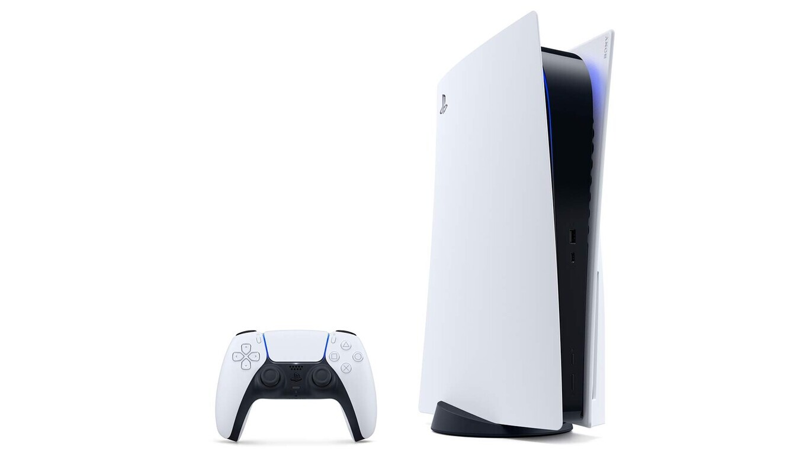
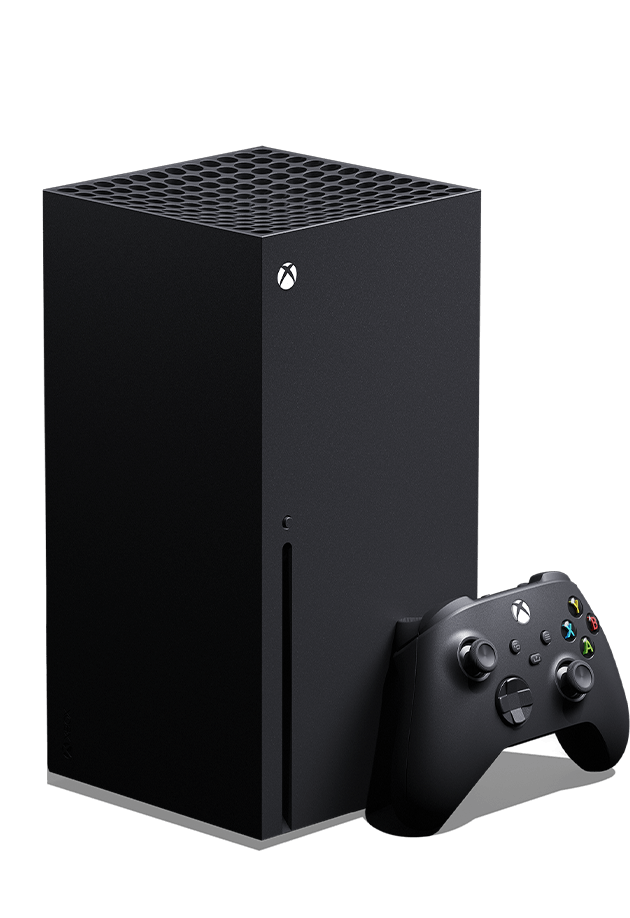
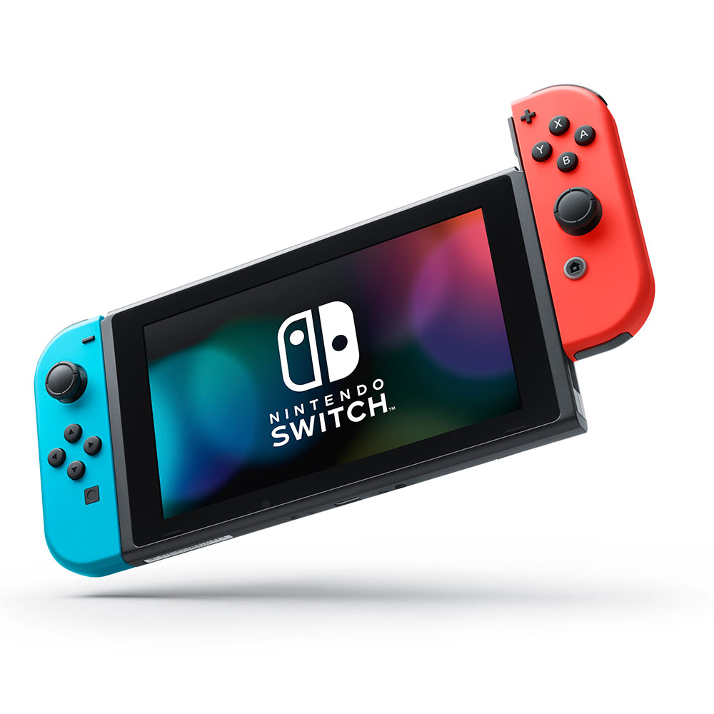

$ 199.999,00
Una máquina que, al igual que su predecesora y a diferencia de las tres primeras consolas de sobremesa de Sony, se parece mucho a un PC. PS5 incluirá retrocompatibilidad con la mayoría de juegos de PS4, ya que "se basa en parte en la arquitectura de PS4".

$ 219.999,00
Equipado con las arquitecturas Zen 2 y RDNA 2 de AMD, el DirectX Ray Tracing ofrece una iluminación, sombras y reflejos precisos y realistas para crear mundos dinámicos y vivos.

$ 124.999,00
Nintendo Switch es una consola desmontable, que puede usarse en modo portátil, sobremesa o en la TV; esto te brindará la posibilidad de utilizarla donde quieras y compartir sus controles.